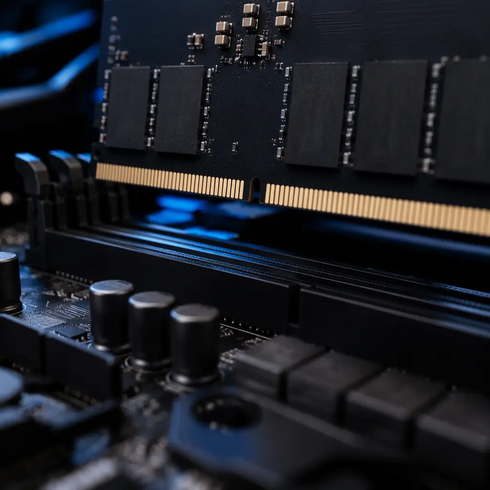
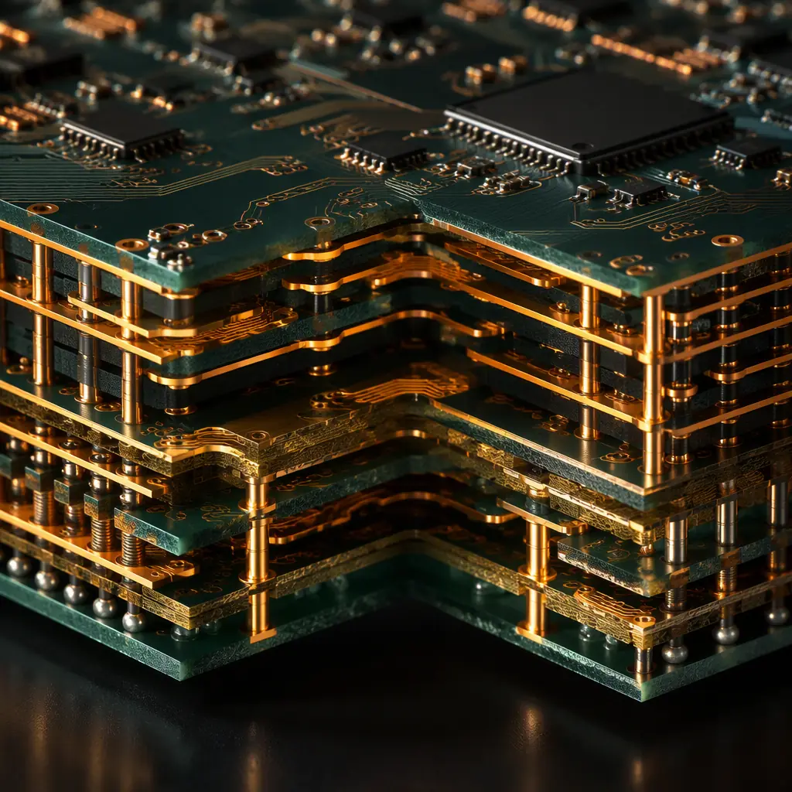

Every year we see otherwise well-designed products fail their memory bring-up — not because of bad silicon, but because the PCB layout violated one of the interface's non-negotiable constraints. DDR4 at 3200 MT/s already pushes a 1.6 GHz clock across a dozen traces; DDR5 at 6400 MT/s doubles the data rate while tightening timing margins to the point where ±10 ps of skew matters. As a fabrication and assembly partner, Huaxing PCBA manufactures memory boards daily — from 4-layer consumer modules to 16-layer server mainboards with 24 DIMM slots — and this guide reflects the design rules we actually verify in DFM review, not the idealized versions from reference design notes.
The good news: DDR routing is a solved problem if you follow a consistent discipline. Topology, impedance, reference planes, length matching, and via treatment are all decisions you make before the first trace is drawn. This guide covers each one with the numbers that matter, then closes with the manufacturing constraints that quietly invalidate otherwise-correct layouts — because a design that cannot be fabricated to tolerance is not a design at all.

DDR4 vs DDR5 — What Actually Changed for the PCB Designer
Moving from DDR4 to DDR5 is not just a faster version of the same interface. Several architectural changes have direct PCB consequences, and designs that simply re-use DDR4 layout rules will leave performance on the table — or fail qualification outright.
| Parameter | DDR4 (typical) | DDR5 (typical) | PCB Impact |
|---|---|---|---|
| Data rate | 2133-3200 MT/s | 4800-6400 MT/s | Stricter skew & via stub control |
| VDD / VDDQ | 1.2 V | 1.1 V | ~30% tighter noise budget |
| Burst length | 8 (BL8) | 16 (BL16) | Fewer, longer bursts — same power |
| Command/address topology | Fly-by (3DS optional) | Fly-by, 2-rank same-rank refresh | Topology unchanged, timing tighter |
| On-die ECC | No | Yes (DRAM core) | Soft-error resilience, not layout relief |
| PMIC on module | No (VDD on board) | Yes (5V input, PMIC on DIMM) | DIMM power filtering moves off-board |
| Decision feedback equalization | Optional | Standard (DFE) | Receiver can recover some ISI — not a layout crutch |
Two of these rows deserve emphasis. First, the 1.1 V rail means the PDN noise budget shrinks by roughly 30% compared to DDR4 — the power delivery design has to be better, not the same (power integrity for high-speed boards is a topic we cover separately). Second, DFE on the receiver helps recover signal that the channel degrades, but it cannot fix gross topology mistakes; the industry rule of thumb is that a marginal DDR4 layout becomes a failing DDR5 layout at the same cost.
Command/Address Routing — Fly-By Topology and Why T-Branch Is Obsolete
DDR4 and DDR5 both mandate fly-by topology for command/address (CA) and control signals. In fly-by routing, the CA bus daisy-chains from DIMM slot to DIMM slot, terminating at the far end with a termination resistor network (VTT). This minimizes stub length at each device — the single most important factor for signal quality at multi-Gbps rates.
Route CA and Control as a Single Chain, Not a Star
Every branch off the CA bus acts as a stub that reflects energy back into the line. Fly-by keeps each device's connection as short as possible (ideally < 300 mils from the bus to the package ball). T-branch topologies that worked for DDR2/DDR3 double the stub count and are not supported for DDR4/DDR5 beyond two DIMMs. For a 2-DIMM-per-channel design, the chain order is: controller → DIMM A → DIMM B → VTT terminator. VTT termination should sit at the physical end of the chain, not at the controller.
Match CA Lengths Within the Group — Not Across the Whole Bus
The CA bus is matched within ±20-50 mils between signals of the same group (address, bank, command, control) rather than as one monolithic bundle, because the controller drives them against a common clock. Group-by-group matching is what your fab's DFM check will look for; unmatched control signals (CS#, CKE, ODT) are a common source of hard-to-debug rank failures. See our signal integrity design rules for the general matching discipline.

Impedance Targets & Tolerances That Actually Ship
DDR impedance targets are standardized, but the tolerance you can hold depends on your material, stackup, and the fab's process control. These are the values we manufacture to and verify with TDR on every memory board program:
| Signal Group | Target Impedance | Manufacturing Tolerance |
|---|---|---|
| Single-ended data (DQ), DMI, DQS (single) | 40 Ω ± 10% | ±10% (tight stackup control) |
| Differential DQS / DQ differential pairs | 80 Ω ± 10% (diff) | ±10% |
| Command/address, control, clock | 40 Ω single-ended | ±10% |
| Differential clock (CK_t/CK_c) | 100 Ω ± 10% (diff) | ±10% |
The 40 Ω single-ended target for DQ traces is lower than typical 50 Ω logic routing because the controller and DRAM include on-die termination that expects the lower impedance. A common mistake is routing the byte lanes at 50 Ω "because it's the default" — this mismatch degrades the signal-integrity margin that DDR5's tight timing budget simply does not have. If your design tool defaults to 50 Ω, override it for the memory groups. For how the stackup achieves these values, our impedance control guide walks through the math of trace width, spacing, and dielectric height.
Layer Stackup & Reference Plane Rules for Memory Boards
DDR4 works reliably on a well-designed 6-layer stackup; DDR5 at 6400 MT/s pushes most production designs to 8-12 layers. What matters is not the count but the adjacency of planes to every routing layer.
Every Routing Layer Needs an Unbroken Reference Plane
Impedance is defined against a reference plane. When a DQ trace crosses a plane split (e.g., a moat under a connector area), its impedance jumps and the return current detours — exactly the recipe for crosstalk and radiated EMI. Rule: no signal trace crosses a split; if a split is unavoidable, bridge it with stitching capacitors at 100-200 mil spacing. Memory buses should be routed over solid ground on one side and a power plane (VDD/VDDQ) on the other, which also gives the PDN its plane capacitance.
Keep DQ Byte Lanes on Adjacent Layers With Consistent Dielectric
Each DQ byte lane (8 DQ + DQS + DM = 10-11 signals) should share the same routing layer and the same dielectric stack so that propagation delay is consistent across the group. Mixing layers with different dielectric heights adds skew you cannot fully compensate with serpentine length matching. At 6400 MT/s, propagation delay per inch of FR-4 is roughly 160-170 ps; a 10 mil difference in trace length is ~1.4 ps — small, but length matching rules below are written to keep total group skew under control.
Thinner Dielectrics for DDR5 — and What That Costs
DDR5 designs commonly use 3-4 mil (0.075-0.1 mm) prepreg between signal and plane layers to hit 40 Ω with reasonable trace widths. Thinner dielectric improves impedance control and reduces plane spacing for lower inductance, but it increases the risk of resin starvation, impedance variation across panel, and higher Dk sensitivity to resin content. This is where material selection matters: a high-performance laminate with tight Dk tolerance (e.g., Megtron or a mid-loss FR-4 like TU-872) is worth the upcharge on DDR5 boards. Our laminate selection guide compares the options by Dk tolerance and loss.
Length Matching & Timing Budgets — The Numbers
Length matching is the discipline that turns a good stackup into a working interface. JEDEC publishes timing budgets; the layout translation is a set of matching rules that have been stable across generations:
DQ-to-DQS Matching: ±10-25 mils Within a Byte Lane
Each byte lane's DQ signals must be matched to its strobe (DQS) within ±10-25 mils depending on data rate — at DDR5-6400, the tight end (≤ ±10-15 mils) is recommended because the controller's write leveling can compensate only partially. DQS-to-CK matching across the lane is typically ±50-100 mils. The same-lane matching is far stricter than lane-to-lane, so group your matching effort there first.
CA-to-CK Matching: ±50-100 mils; CK to CK_n Differential: ±5 mils
The command/address bus is matched to the clock within ±50-100 mils (tighter at 6400). The differential clock pair itself must be matched to within ±5 mils of each other and routed with constant spacing — a 5 mil skew in a differential clock at 1.6 GHz is over 2.6 ps of phase error, most of which the controller cannot recover. Keep differential pairs coupled: edge-to-edge spacing at 2× the trace width, and avoid separating the pair even for via transitions.
Via Stubs & Back-Drilling Above 3200 MT/s
A via that connects a signal from layer 3 to layer 12 leaves a stub of unused barrel below the connection. That stub is an open-circuit transmission line stub that resonates — and at DDR5 frequencies, even a 30 mil stub measurably degrades the channel's eye diagram.
Key Insight: The resonance frequency of a via stub depends on its length: a 40 mil stub in FR-4 resonates around 8-10 GHz, but the harmonic content of a 3.2 GHz clock already interacts with it. Rule of thumb for DDR5: keep signal via stubs below ~15-20 mils. If your design routes on inner layers, specify back-drilling of the stubs, or move the routing layer so the via transition is short. Back-drilling adds a process step and cost — this is a DFM discussion to have with your fab before tooling, not after.
Via-in-Pad and Via Fill for Dense Memory Fan-Out
Routing 64-bit wide data buses out of a BGA controller typically requires via-in-pad on the BGA escape area. These vias must be filled (conductive or non-conductive epoxy) and capped, otherwise solder wicks into the barrel and voids the BGA joint. Our via fill types guide covers copper-filled vs epoxy-filled choices — for DDR escape routing, epoxy-filled with cap plating is the standard balance of cost and reliability. Expect the fab to add a microsection verification step on via fill quality for memory boards.
Manufacturing Constraints That Break Otherwise-Correct Designs
Every month our DFM team sees a memory board design that is electrically correct on paper but has a fabrication issue that will quietly kill yield or reliability. These are the top five, in order of frequency:
Aspect Ratio Limits on Plated Vias
A 0.2 mm finished via in a 3.2 mm board is a 16:1 aspect ratio — at the edge of standard plating capability. High-aspect-ratio vias thin the copper at the center of the barrel, raising resistance and risking open vias under thermal stress. If your stackup forces thin vias through thick boards, either enlarge the via, reduce board thickness, or move to sequential lamination (HDI). Our HDI technology guide explains when microvia buildup is the right answer for dense memory designs.
Trace Width vs Copper Weight at 40 Ω
At 40 Ω on a 4 mil dielectric, the required trace width is roughly 4-5 mils with 1 oz copper. If you also need 2 oz copper for power paths (common on server boards), the etch factor changes the effective width and impedance — impedance tolerance can drift by 2-3 Ω unless the fab compensates. Specify the target impedance with the final copper weight in mind, and ask your fab for the etch compensation they apply. See our copper weight selection guide for how power and signal requirements interact.
Serpentine Length Matching Near Other Traces
Accordion serpentines used for length matching reintroduce crosstalk if the parallel segments are too close. Keep serpentine segments spaced at ≥ 3× the trace width, limit serpentine depth, and never route a serpentine under a component or over a plane split. A common DFM correction we issue is expanding serpentine spacing on DDR buses — it costs nothing electrically and prevents coupling between matched pairs.
Controlled Impedance Coupons and TDR Verification
Every memory board panel must carry impedance coupons per the stackup, and the fab should report TDR-measured impedance per panel. Insist on this in your fab notes: "Impedance per IPC-2141, coupons per panel, report required." A supplier that does not verify impedance on memory boards is shipping a lottery ticket. Our Gerber preparation guide covers how to communicate these requirements in your fabrication notes so nothing is left to interpretation.
Factory Reality: For DDR5 programs, Huaxing PCBA runs impedance TDR verification on every panel, back-drills stubs beyond 15 mils as standard on request, and microsections via fill quality on the first article. Memory interfaces are where the difference between a "PCB supplier" and a "high-speed manufacturing partner" shows up — the DFM feedback at the design stage is where most memory bring-up problems get prevented.
What This Means for Your Next Memory Board Order
DDR4 and DDR5 design is a stack of small, non-negotiable disciplines: fly-by topology, 40 Ω targets, unbroken reference planes, group-wise length matching, and via stub control. Get the stackup and topology right at the start, and the rest is verification rather than heroics. At Huaxing PCBA, our engineering team reviews your memory interface at the DFM stage — impedance targets, via strategy, back-drill requirements, and stackup tolerance — and returns a manufacturability report before tooling is cut. Read our stackup design guide to prepare a stackup that survives DFM, or send us your design files for a free high-speed manufacturability review.